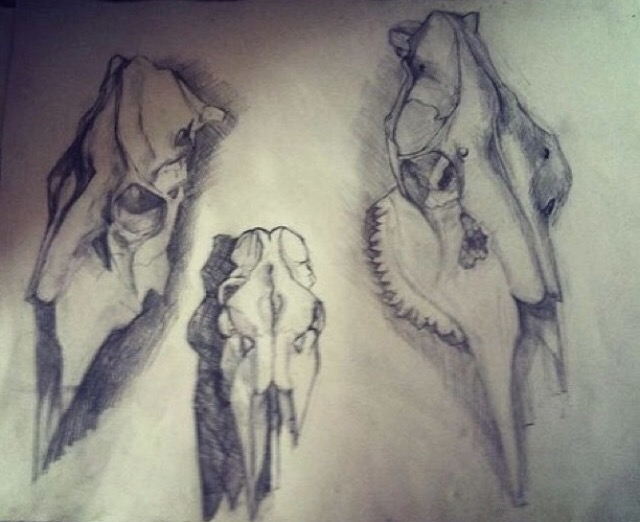
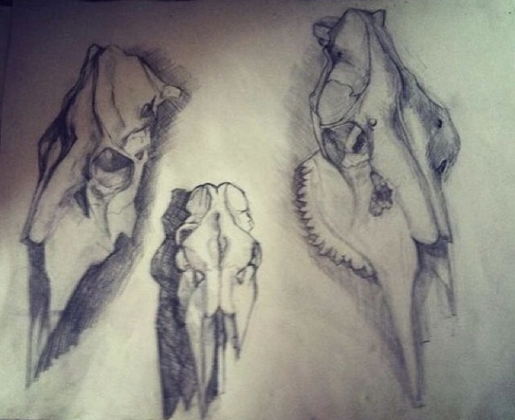

content heading
My work is about navigating the spans that divide life’s dualities, such as birth and death, division and union, waxing and waning. I record observations, both from memory and invention. When people ask me what my work is about, I can only answer “everything! Creating or experiencing art can relax and sooth us or it may enliven and stimulate us. The process of creating art engages both the body and the mind and provides us with time to look inward and reflect. Experiencing art also gives us reason to think and be reflective or may inspire us to get up and dance. Art provides a release, a place for reflection and away to engage our whole selves.
I believe that academic drawing is very important for painting. On this page are my drawings. Stroke markings are very important, usually I spend about two months of building on the size of A4 painting. Looking at the pictures you can see that its not easy. Art reflects cultural values, beliefs and identity and helps to preserve the many different communities

 
